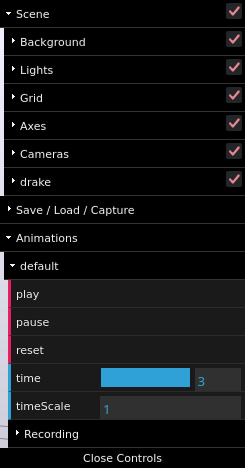

Click this link to see the preprint on arXiv! (To appear at RSS 2023.)
Results video:
This is a link to the meshcat recording of the mug organization demo.
Below are interactive meshcat recordings of all PR2 plans from the paper Non-Euclidean Motion Planning with Graphs of Geodesically-Convex Sets, submitted to RSS. This replicates Table I of the paper, with each cell linking to its corresponding meshcat recording. Struckthrough cells indicate that collision(s) are present in the trajectory, and the time stamps corresponding to the collision(s) are included. Both GCS workarounds include their best and worst case results (linked to separate meshcat recordings).
| Experiment | GGCS-Planner | Drake-Trajopt | PRM | PRM + Drake-Trajopt | GCS-Planner (Joint Limits) | GCS-Planner (No Joint Limits) |
| 1T to 1B | 1.827 | 1.803 | 4.359 | 1.808 | 1.828 | 1.839 |
| 1CL to 1CR | 2.255 | 2.204 | 9.219 | 2.182 | 2.239 | 2.247 |
| 1M to 4M | 3.875 | Left arm t=0.275 Right arm t=5.272 |
14.554 | Right arm t=0.714 Left arm t=4.381 |
6.482/10.478 | 3.990/12.589 |
| 1CL to 2CR | 4.473 | Right arm t=2.155 |
12.110 | Right arm t=0.49 |
4.441/13.815 | 4.640/13.233 |
| 1CL to 3CR | 8.182 | 10.263 | 15.250 | Right arm t=0.7 Right arm t=1.87 Left arm t=2.02 Right arm t=2.77 |
7.820/12.125 | 8.501/12.125 |
| 1Cl to 4CR | 4.382 | 7.583 | 17.459 | Right arm t=0.27 Left arm t=0.555 Right arm t=4.39 |
4.728/9.961 | 4.559/12.418 |
| 1T to 4B | 4.538 | 8.781 | 12.351 | Left arm t=0.34 Right arm t=0.68 |
5.320/14.928 | 5.473/14.160 |
Click and drag the screen to rotate the camera. Holding shift will instead pan the camera. Scroll to zoom in or out.
To adjust playback of the trajectory, click the "Open Controls" button in the top right corner. You will see an image similar to below:
The controls for playback are under the "Animations" menu. "play" and "pause" start and stop the playback from the current timestamp, and "reset" sets the time to 0. "time" indicates the current time of the pose within the trajectory, and "timeScale" controls the playback speed (e.g. 0.5 is half speed). The values for "time" and "timeScale" are text fields, and can be edited directly.